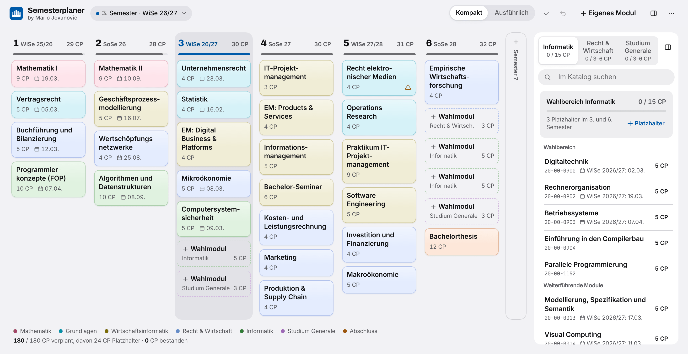
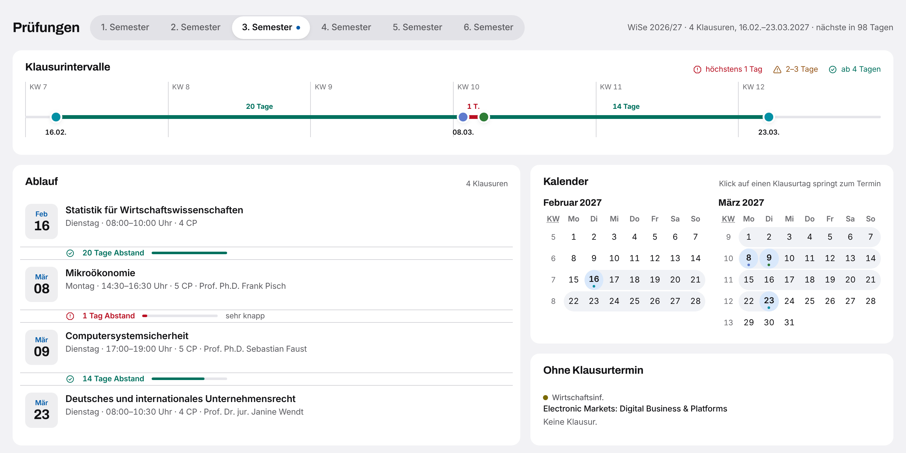

Web-App · Wirtschaftsinformatik B.Sc. an der TU Darmstadt
Semesterplaner
Verteile die Module der Wirtschaftsinformatik auf deine Semester und sieh zu jedem Semester, wann deine Klausuren liegen und wie viel Zeit dazwischen bleibt. Die App läuft im Browser, ohne Anmeldung, und speichert nur auf deinem Gerät.
Was der Planer kann
- Semesterplan
- Modulkatalog
- Prüfungen
- Prüfungsplan durchsuchen
- Status und Fehlversuche
So sieht es aus

Prüfungen im Blick
Zu jedem Semester zeigt der Planer, wann deine Klausuren liegen und wie viele Tage dazwischen bleiben. Termine ohne Klausur, etwa bei Seminaren, stehen gesondert darunter.

Deine Daten
Der Plan liegt im Speicher deines Browsers. Über das Menü exportierst du ihn als JSON-Datei und importierst ihn auf einem anderen Gerät wieder.
Für die Nutzung ohne Internet lädst du die App als einzelne HTML-Datei herunter und öffnest sie im Browser. Sie lädt nichts aus dem Netz nach.
Gut zu wissen
- Ohne Gewähr
- Stand der Daten
- Für Wirtschaftsinformatik